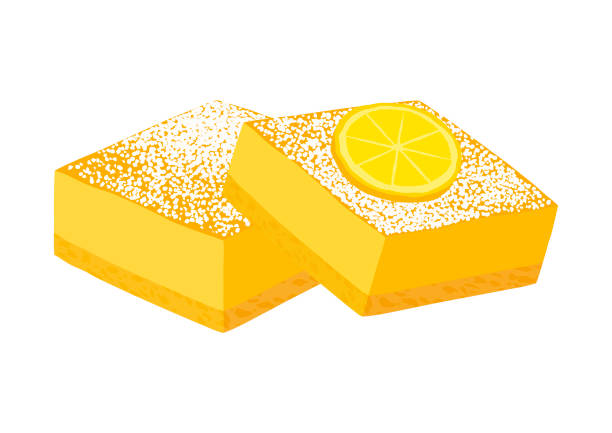

Vegan Lemon Bars
Home

Ingredients
Shortbread Crust
- 1 Cup Gluten-Free All-Purpose Flour
- 1/4 Cup Granulated Sweetener (or preferred granulated sugar)
- 1 Stick Vegan/Allergy-Free Butter (1/2 Cup melted)
- ½ Tsp Pure Madagascar Bourbon Vanilla Extract
Lemon Filling
- 1 1/2 Cups Granulated Sweetener (or preferred granulated sugar)
- 3/4 Cup Fresh Lemon Juice
- 5-6 TB Corn Starch or Arrowroot Starch
- 1 Cup Full-Fat Unsweetened Canned Coconut Milk
- 1/2 Tsp Ground Turmeric
- ½ Tsp Pure Madagascar Bourbon Vanilla Extract (optional)
- Powdered Sweetener (or preferred powdered sweetener, to top)
Instructions
- Preheat the oven to 350°F
- In a mixing bowl, whisk together the flour and sweetener. Pour in the stick of melted butter and vanilla extract. Mix the dough together until it's thick and wet.
- Line an 8x8 square baking pan with two long strips of parchment paper, cut so the parchment paper overhangs the 4 edges of the pan.
- Press the wet shortbread dough into the lined pan, about 1/4 inch in thickness. The pre-bake the shortbread for 18-20 minutes. Remove and set it aside to cool while you prepare the lemon curd filling.
- In a medium non-stick saucepan, whisk together the sweetener and starch so there are no clumps. Then add in the turmeric, lemon juice, and optional vanilla, before turning the heat on the stove to medium. Mix everything together until combined and the sugar has melted.
- Slowly pour in the coconut milk and continue stirring until you have a smooth, uniform mixture. Stir the mixture every minute or so until it thickens and becomes jell-like. Then remove from the heat.
- Carefully pour and smooth out the lemon filling over the cooled pre-baked crust. Then bake the lemon bars in the already preheated oven at 350°F for another 12-15 minutes.
- Remove the bars from the oven and let the entire pan cool at room temperature before chilling in the fridge for at least 1-2 hours, preferably overnight.
- Once the lemon bars are completely chilled, lift the block of bars out of the pan, using the parchment paper handles. Dust the top lemon layer with powdered sweetener, and cut the bars with a sharp knife into 9 squares.
- Store any leftover bars in an airtight container in the fridge for about 7 days.